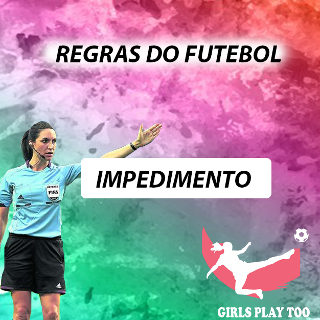
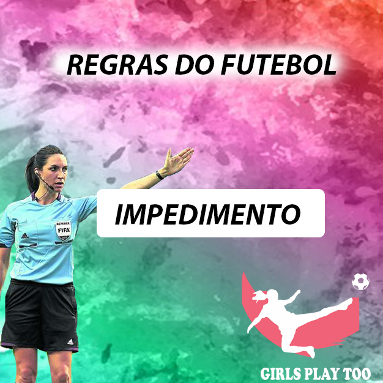

Design Digital
Profa. Fabiana Pupin Masson Caravieri
Descrição:
A disciplina de Design Digital tem como objetivo o desenvolvimento das habilidades relacionadas à resolução de "problemas” valendo-se de formas e criação de objetos para atender uma demanda(edição de imagens, criação de logos, banners, cartões, templates etc).
Artes desenvolvidas com as habilidades aprendidas:
 
